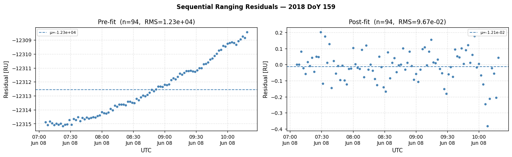
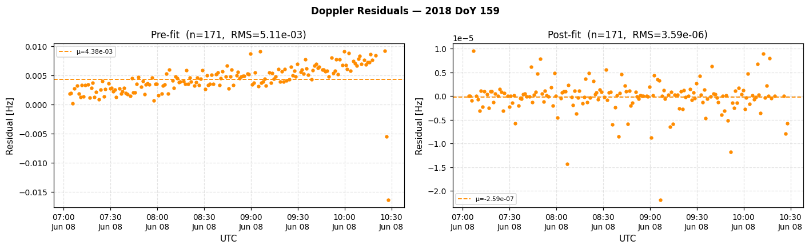
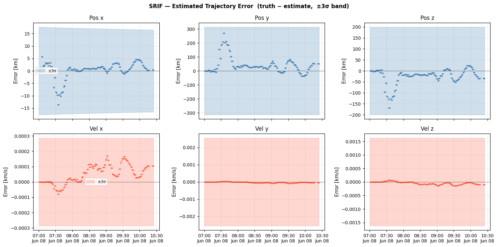

# OSIRIS-REx Real Data — Single-Pass SRIF Orbit Determination#
Scarabaeus OD Framework | Last revised 2026
What this notebook covers#
A self-contained walkthrough of sequential orbit determination using one real OSIRIS-REx DSN tracking pass. Every step is explained so that a reader unfamiliar with the Scarabaeus API can follow along.
# |
Topic |
|---|---|
1 |
Setup — kernels, units, frames, spacecraft model |
2 |
Load real radiometric data — sequential ranging + Doppler |
3 |
Propagate nominal trajectory from SPICE truth |
4 |
Coarse outlier editing with Huber regression + MAD thresholding |
5 |
SRIF sequential filter |
6 |
Pre/post-fit residuals and state-error analysis |
See Also#
Media Corrections notebook — tropospheric and ramp-table corrections applied here
Batch OD notebook — batch (LSB / SRIFB) formulation on simulated data
1. Setup#
Standard scientific stack plus scarabaeus, supplementary data helper, and sklearn for the outlier-rejection step.
[1]:
import os
from pathlib import Path
import scarabaeus as scb
import numpy as np
import matplotlib.pyplot as plt
import matplotlib.dates as mdates
from sklearn import linear_model
import supplementary as supp
plt.rcParams.update({
'font.size': 10, 'axes.titlesize': 11, 'axes.labelsize': 10,
'xtick.labelsize': 9, 'ytick.labelsize': 9, 'legend.fontsize': 8,
'figure.dpi': 110, 'axes.grid': True, 'grid.alpha': 0.35, 'grid.linestyle': '--',
})
1.1 — SPICE Kernels, Units, Frames, and Spacecraft#
Output paths#
SPK kernels generated by this notebook are written to supplementary/supp_data/kernels/scenario/ — the same location used by the Ideal-MSR batch OD notebook — and results to tutorial_results/real_msr_od/.
Units and frames#
SCB enforces physical units at every operation via ArrayWUnits. scb.Units.get_units() returns unit objects; scb.Frame.generate_common_frames() returns the four standard frames:
Frame |
Description |
|---|---|
|
Earth Mean Equator, J2000.0 — default inertial propagation frame |
|
Body-fixed Earth frame — used for DSN ground-station positions |
|
Mean Ecliptic, J2000.0 |
|
IAU Earth-fixed frame |
SPICE kernels#
load_kernel_from_mkfile() furnishes the full OSIRIS-REx kernel set (SPK trajectories, PCK body constants, LSK leap-second, frame kernels) from the supplementary data metakernel.
Spacecraft#
``sc_id = -64`` — NAIF ID for OSIRIS-REx.
``scft_transpd_delay`` — transponder turnaround delay in Range Units; subtracted when computing theoretical sequential ranging observables.
scb.CelestialBody.from_constants("SUN")— heliocentric central body.
[2]:
# load tutorial data
data = supp.load_data()
# load kernels
scb.SpiceManager.clear_kernels()
scb.SpiceManager.load_kernel_from_mkfile(data.OREx_real_data_mk.path)
# ── output paths (same convention as advanced_IdealMSR_BatchOD) ──────────────
tut_kernels_path = Path(data.mk.path).parent.parent / 'scenario'
tut_result_path = Path.cwd() / 'tutorial_results' / 'real_msr_od'
tut_kernels_path.mkdir(parents=True, exist_ok=True)
tut_result_path.mkdir(parents=True, exist_ok=True)
# Generate common frames and units
kg, km, sec, unitless = scb.Units.get_units(["kg", "km", "sec", "unitless"])
(J2000, ITRF93, ECLIPJ2000, IAUEARTH) = scb.Frame.generate_common_frames()
# Scenario parameters
sc_id = -64
scft_transpd_delay = 16529.719234434557
# Spacecraft
Orbiter_mass = scb.ArrayWUnits(1200.0, kg)
Orbiter_area = scb.ArrayWUnits(1.2e-05, km**2)
Orbiter_cr_srp = scb.ArrayWUnits(0.8, None)
Orbiter = scb.Spacecraft("Orbiter", sc_id, Orbiter_mass, Orbiter_area, Orbiter_cr_srp)
frame = J2000
origin = scb.CelestialBody.from_constants("SUN")
SCB supplementary data up to date.
2. Load Radiometric Tracking Data and Apply Media Corrections#
Scarabaeus measurement JSON format#
Scarabaeus real measurement models expect tracking data in a predefined JSON format. Each file represents one DSN pass and contains a set of top-level keys:
Key |
Content |
|---|---|
|
Sequential ranging observable — epoch, value, station SPICE ID, outlier flags |
|
Doppler observable — epoch, value, count time, station SPICE ID, outlier flags |
|
Uplink carrier ramp table (SFDU record 0) |
|
Uplink / downlink zenith-height corrections (SFDU 2 & 3) |
|
Ranging modulo, uplink frequency, station calibration delays (SFDU 7) |
|
Exciter ramp table — sec, doy, ramp_freq, ramp_rate, ramp_type (SFDU 9) |
|
Doppler count time, M₂ turnaround ratio, outlier flags (SFDU 16) |
Converting raw DSN files into this format is handled by Deep Whale Network (DWN), an internal ORCCA tool that is not yet publicly released.
Tracking observables#
Two DSN observable types are loaded from a single tracking JSON file:
Model class |
Observable |
Physical quantity |
|---|---|---|
|
|
Round-trip light time → range [RU] |
|
|
Carrier frequency shift → range-rate [Hz] |
Auxiliary data (aux_fun)#
aux_fun() packages the SFDU ancillary metadata into two dictionaries — one per observable type — consumed by SCB’s measurement models:
SFDU_7 — ranging modulo, uplink frequency, station calibration delays, RU conversion scalars
SFDU_16 — Doppler count time
Tc, M₂ turnaround ratioSFDU_9 — ramp table (frequency ramps on the uplink exciter)
SFDU_2 / SFDU_3 — tropospheric zenith-height corrections
The Doppler uplink-frequency fields (ul_freq, etc.) are filled with the max-unique value from the ranging records because SFDU_7 is synchronised with ranging epochs, not Doppler epochs.
Media corrections#
scb.MediaCorrections attaches atmospheric corrections directly to each measurement model. The seasonal tropospheric file is loaded at construction; the non-seasonal file (year/day specific) is resolved by find_tro_metadata() against the pass date.
[3]:
def aux_fun(trk_data):
# Generate the sranging auxiliary data dictionary
sranging_aux_data = {
#
# Sranging auxiliary data (from 2W_sranging, SFDU_7)
#
"RU": (((np.array(trk_data["aux_SFDU_7"]["exc_scalar_den"]) / np.array(trk_data["aux_SFDU_7"]["exc_scalar_num"])) / 16 ) ** -1).tolist(),
"M": trk_data["aux_SFDU_7"]["rng_modulo"],
"M2_num": trk_data["aux_SFDU_16"]["M2_num"],
"M2_den": trk_data["aux_SFDU_16"]["M2_den"],
"rng_type": trk_data["aux_SFDU_7"]["rng_type"],
"outlier_flag_sranging": trk_data["aux_SFDU_7"]["outlier_flag"],
"year_SFDU7": trk_data["aux_SFDU_7"]["year"],
"doy_SFDU7": trk_data["aux_SFDU_7"]["doy"],
"sec_SFDU7": trk_data["aux_SFDU_7"]["sec"],
#
# Delays auxiliary data (from 2W_sranging, SFDU_7)
#
"ul_freq": trk_data["aux_SFDU_7"]["ul_freq"],
"ul_zheight_corr": trk_data["aux_SFDU_2"]["ul_zheight_corr"],
"dl_zheight_corr": trk_data["aux_SFDU_3"]["dl_zheight_corr"],
"scft_transpd_delay": scft_transpd_delay, # [RU]
"scft_transpd_delay_s": scft_transpd_delay / ((221.0 / (749.0 * 2.0)) * 8445.767679 * 1e6), # [s]
"transmit_time_tag_delay": trk_data["2W_doppler"]["transmit_time_tag_delay"],
"rcv_time_tag_delay": trk_data["2W_doppler"]["rcv_time_tag_delay"],
"array_delay": trk_data["2W_doppler"]["array_delay"],
"ul_stn_cal": trk_data["aux_SFDU_7"]["ul_stn_cal"],
"dl_stn_cal": trk_data["aux_SFDU_7"]["dl_stn_cal"],
"exc_scalar_num": trk_data["aux_SFDU_7"]["exc_scalar_num"],
"exc_scalar_den": trk_data["aux_SFDU_7"]["exc_scalar_den"],
#
# Ramp table auxiliary data (from SFDU_9)
#
"ramp_sec": trk_data["aux_SFDU_9"]["sec"],
"ramp_day": trk_data["aux_SFDU_9"]["doy"],
"ramp_freq": trk_data["aux_SFDU_9"]["ramp_freq"],
"ramp_rate": trk_data["aux_SFDU_9"]["ramp_rate"],
"ramp_type": trk_data["aux_SFDU_9"]["ramp_type"],
}
Doppler_aux_data = {
#
# Doppler auxiliary data (from 2W_doppler, SFDU_16)
#
"Tc": trk_data["aux_SFDU_16"]["Tc"],
"M2_num": trk_data["aux_SFDU_16"]["M2_num"],
"M2_den": trk_data["aux_SFDU_16"]["M2_den"],
"outlier_flag_doppler": trk_data["aux_SFDU_16"]["outlier_flag"],
"year_SFDU16": trk_data["aux_SFDU_16"]["year"],
"doy_SFDU16": trk_data["aux_SFDU_16"]["doy"],
"sec_SFDU16": trk_data["aux_SFDU_16"]["sec"],
#
# Delays auxiliary data (from 2W_doppler, SFDU_16)
#
"ul_zheight_corr": trk_data["aux_SFDU_2"]["ul_zheight_corr"],
"dl_zheight_corr": trk_data["aux_SFDU_3"]["dl_zheight_corr"],
"scft_transpd_delay": scft_transpd_delay, # [RU]
"scft_transpd_delay_s": scft_transpd_delay / ((221.0 / (749.0 * 2.0)) * 8445.767679 * 1e6), # [s]
"transmit_time_tag_delay": trk_data["2W_doppler"]["transmit_time_tag_delay"],
"rcv_time_tag_delay": trk_data["2W_doppler"]["rcv_time_tag_delay"],
"array_delay": trk_data["2W_doppler"]["array_delay"],
#
# Method (1) - Take these values from 2W_sranging and aux_SFDU_7, just max-unique, since its asynch with Doppler time
#
"ul_freq": (np.array(trk_data["aux_SFDU_2"]["ul_zheight_corr"]) * 0).tolist() + np.max(np.unique(trk_data["aux_SFDU_7"]["ul_freq"])),
"ul_stn_cal": (np.array(trk_data["aux_SFDU_2"]["ul_zheight_corr"]) * 0).tolist() + np.max(np.unique(trk_data["aux_SFDU_7"]["ul_stn_cal"])),
"dl_stn_cal": (np.array(trk_data["aux_SFDU_2"]["ul_zheight_corr"]) * 0).tolist() + np.max(np.unique(trk_data["aux_SFDU_7"]["dl_stn_cal"])),
"exc_scalar_num":(np.array(trk_data["aux_SFDU_2"]["ul_zheight_corr"]) * 0).tolist() + np.max(np.unique(trk_data["aux_SFDU_7"]["exc_scalar_num"])),
"exc_scalar_den":(np.array(trk_data["aux_SFDU_2"]["ul_zheight_corr"]) * 0).tolist() + np.max(np.unique(trk_data["aux_SFDU_7"]["exc_scalar_den"])),
"RU": 0.14753004005340453,
#
# Ramp table auxiliary data (from SFDU_9)
#
"ramp_sec": trk_data["aux_SFDU_9"]["sec"],
"ramp_day": trk_data["aux_SFDU_9"]["doy"],
"ramp_freq": trk_data["aux_SFDU_9"]["ramp_freq"],
"ramp_rate": trk_data["aux_SFDU_9"]["ramp_rate"],
"ramp_type": trk_data["aux_SFDU_9"]["ramp_type"],
}
return sranging_aux_data, Doppler_aux_data
def add_media_to_meas_model(obs_quantities, meas_model, media_correction_object):
year_pass_media, day_pass_media, _ = scb.SpiceManager.et2YDS([obs_quantities[0].times.values[0]])
metadata_tropo = scb.MediaCorrections.find_tro_metadata(tropo_file_bucket, year_pass_media[0], day_pass_media[0])
metadata_iono = scb.MediaCorrections.find_ion_metadata(iono_file_bucket, year_pass_media[0], day_pass_media[0])
if metadata_tropo:
media_correction_object.tropo_non_seasonal_file_path = os.path.join(tropo_file_bucket, metadata_tropo['file'])
if metadata_iono:
media_correction_object.iono_file_path = os.path.join(iono_file_bucket, metadata_iono['file'])
meas_model.media_corrections = media_correction_object
return meas_model
# Setup tropo correction filepaths
tropo_seasonal_file_path = data.tropo_seasonal_new.path
trk_file_path = data.trk_file.path
tropo_file_bucket = os.path.dirname(data.tropo_nonseasonal.path)
iono_file_bucket = os.path.dirname(data.tropo_nonseasonal.path)
# Load the radiometric data
meas_dict_list = []
trk_data = scb.Utils.load_json(trk_file_path)
aux_data_sr, aux_data_dop = aux_fun(trk_data)
meas_dict_list.append(aux_data_sr)
meas_dict_list.append(aux_data_dop)
# Get the ground station
GS1_name = "DSS-" + str(trk_data["2W_doppler"]["spice_id"][0])
GS1 = scb.GroundStation(GS1_name)
sranging_sigma = scb.ArrayWUnits(1e1, km / km)
doppler_sigma = scb.ArrayWUnits(1e-3, 1 / sec)
# Create measurement models
sranging_model = scb.SequentialRangingReal("GS1 Real Range", GS1, sigma=sranging_sigma,
meas_bias=0.0, computed_measurements_dict=meas_dict_list[0])
doppler_model = scb.DopplerReal("GS1 Real Range Rate", GS1, sigma=doppler_sigma,
meas_bias=0.0, computed_measurements_dict=meas_dict_list[1])
# Create media correction objects
mc_sranging = scb.MediaCorrections(name="GS1 Media Corrections srang", instrument=GS1,
tropo_seasonal_file_path=tropo_seasonal_file_path)
mc_doppler = scb.MediaCorrections(name="GS1 Media Corrections doppler", instrument=GS1,
tropo_seasonal_file_path=tropo_seasonal_file_path)
# Generate observed quantities
sr_obs = sranging_model.observed_measurements(trk_file_path, meas_name="2W_sranging", units=km / km)
doppler_obs = doppler_model.observed_measurements(trk_file_path, meas_name="2W_doppler", units=1 / sec)
# Add media correction to measurement models
sranging_model = add_media_to_meas_model(sr_obs, sranging_model, mc_sranging)
doppler_model = add_media_to_meas_model(doppler_obs, doppler_model, mc_doppler)
# Organize products for processing
obs_quantities_list = [sr_obs, doppler_obs]
model_list = [sranging_model, doppler_model]
meas_type_list = ['range', 'range_rate']
file_label_list = ["real_range", "real_range_rate"]
3. Trajectory Propagation#
The scenario time window is built directly from the observation epochs with a 1-hour pad on each side.
Force model#
The truth propagation uses:
Point-mass gravity from the Sun (primary body)
Third-body perturbations from all eight planets + Pluto (barycenter IDs)
Cannonball SRP — spherical spacecraft, constant reflectivity
C_r = 0.8
SPK output#
After propagation, Trajectory.write_to_spk() writes a binary SPICE SPK kernel to tut_kernels_path. This kernel serves as the truth reference against which the filter solution is compared in Section 6.
[4]:
# Get the time period for the scenario
et_min = 1e34
et_max = 0.0
for obs in obs_quantities_list:
et = obs[0]
et_min = np.min([np.min(et.times.values), et_min])
et_max = np.max([np.max(et.times.values), et_max])
all_et_obs = np.concatenate([obs[0].times.values for obs in obs_quantities_list])
all_et_obs_unique = np.sort(np.unique(all_et_obs))
et_min_obs, et_max_obs = all_et_obs_unique[0], all_et_obs_unique[-1]
et_padded = np.linspace(et_min_obs - 3600, et_max_obs + 3600, int(1e6))
et_start = et_padded[0]
et_end = et_padded[-1]
print('Start time (UTC): ', scb.SpiceManager.et2utc(et_start))
print('End time (UTC): ', scb.SpiceManager.et2utc(et_end))
epoch_array = scb.EpochArray(et_padded, sys="TDB")
epoch_array_obs = scb.EpochArray(all_et_obs_unique, sys="TDB")
# Initial state from SPICE
sc_state_0 = scb.SpiceManager.get_state(str(sc_id), et_start, J2000, origin).values
pos_0 = scb.ArrayWFrame(sc_state_0[0:3], km, J2000)
vel_0 = scb.ArrayWFrame(sc_state_0[3:6], km / sec, J2000)
state_vector = scb.StateArray(
epoch=epoch_array[0], origin=origin,
state=scb.StateDefinition.from_components([
("position", 3, "estimated", "dynamic", Orbiter, pos_0),
("velocity", 3, "estimated", "dynamic", Orbiter, vel_0),
])
)
# True trajectory SPK
orbiter_true_spk = tut_kernels_path / "orex_orbiter_true.bsp"
if orbiter_true_spk.exists(): orbiter_true_spk.unlink()
third_bodies = [
"MERCURYBARYCENTER", "VENUSBARYCENTER", "EARTHBARYCENTER", "MARSBARYCENTER",
"JUPITERBARYCENTER", "SATURNBARYCENTER", "URANUSBARYCENTER",
"NEPTUNEBARYCENTER", "PLUTOBARYCENTER",
]
force_model = scb.ForceModelTranslation(primary_body=Orbiter,
third_bodies=third_bodies,
cannonball_SRP=True)
prop = scb.Propagator(primary_body=Orbiter, state_vector=state_vector,
tspan=epoch_array, force_models=force_model)
prop.propagate()
orbiter_traj = scb.Trajectory(state_array=prop.propagated_state_array)
orbiter_traj.write_to_spk(str(orbiter_true_spk))
Start time (UTC): 2018-06-08T04:55:02.999998
End time (UTC): 2018-06-08T11:28:53.000001
================================================================================
Starting propagation...
================================================================================
Integrating: 100%|███████████████████████████████████████████████| 23630.00/23630.00 s [00:00<00:00]
=================== DOP853 integration complete. ==================
Propagation complete.
4. Coarse Outlier Editing#
Before the measurements are handed to the sequential filter, gross outliers must be removed. A single bad point can corrupt the estimate consistency or cause divergence.
Why Huber regression?#
Ordinary least-squares trend fits are pulled toward outliers, defeating the purpose. Huber regression down-weights large residuals during the fit, producing a detrended residual sequence that is insensitive to the very points we want to flag.
MAD thresholding#
Outliers are identified via the Median Absolute Deviation:
Any observation with a detrended residual exceeding mad_threshold × MAD is discarded. The thresholds here (thresh_sr = 5, thresh_dop = 30) are deliberately loose — this is a coarse pass, not the fine editing the filter applies measurement-by-measurement.
[5]:
def clean_obs_sr(obs, model, target, frame, aux_data, mad_threshold):
_, _, _, computed_obs = model.computed_measurements(
target=target, epoch_array=obs[0], frame=frame, noisy=False, eps_override=aux_data,
)
obs_vals = obs[2].quantity.values
computed_vals = computed_obs.quantity.values
resids = obs_vals - computed_vals
x_huber = obs[0].times.values - np.min(obs[0].times.values) # normalised for numerical stability
clf = linear_model.HuberRegressor()
clf.fit(x_huber[:, np.newaxis], resids)
resids_huber = resids - clf.predict(x_huber[:, np.newaxis])
mad = np.median(np.abs(resids_huber - np.median(resids_huber)))
mask = np.abs(resids_huber) <= mad_threshold * mad
obs_clean = (
scb.EpochArray(obs[0].times.values[mask], sys="TDB"),
obs[1][mask],
scb.ArrayWFrame(obs[2].quantity.values[mask], km / km, frame),
obs[3][mask],
)
aux_data_clean = aux_data.copy()
for kk in aux_data_clean:
if isinstance(aux_data_clean[kk], list) and len(aux_data_clean[kk]) == len(mask):
aux_data_clean[kk] = np.array(aux_data_clean[kk])[mask].tolist()
return obs_clean, aux_data_clean
def clean_obs_dop(obs, model, target, frame, aux_data, mad_threshold):
_, _, _, computed_obs = model.computed_measurements(
target=target, epoch_array=obs[0], frame=frame, noisy=False, eps_override=aux_data,
)
obs_vals = obs[2].quantity.values
computed_vals = computed_obs.quantity.values
resids = obs_vals - computed_vals
x_huber = obs[0].times.values - np.min(obs[0].times.values) # normalised for numerical stability
clf = linear_model.HuberRegressor()
clf.fit(x_huber[:, np.newaxis], resids)
resids_huber = resids - clf.predict(x_huber[:, np.newaxis])
mad = np.median(np.abs(resids_huber - np.median(resids_huber)))
mask = np.abs(resids_huber) <= mad_threshold * mad
obs_clean = (
scb.EpochArray(obs[0].times.values[mask], sys="TDB"),
obs[1][mask],
scb.ArrayWFrame(obs[2].quantity.values[mask], 1 / sec, frame),
obs[3][mask],
)
aux_data_clean = aux_data.copy()
for kk in aux_data_clean:
if isinstance(aux_data_clean[kk], list) and len(aux_data_clean[kk]) == len(mask):
aux_data_clean[kk] = np.array(aux_data_clean[kk])[mask].tolist()
return obs_clean, aux_data_clean
thresh_sr = 5.0
thresh_dop = 30.0
sr_obs_1, aux_data_sr_1 = clean_obs_sr(sr_obs, sranging_model, Orbiter, frame, meas_dict_list[0], thresh_sr)
doppler_obs_1, aux_data_doppler_1 = clean_obs_dop(doppler_obs, doppler_model, Orbiter, frame, meas_dict_list[1], thresh_dop)
meas_dict_list[0] = aux_data_sr_1
meas_dict_list[1] = aux_data_doppler_1
sranging_sigma = scb.ArrayWUnits(0.5, km/km)
doppler_sigma = scb.ArrayWUnits(0.001, 1 / sec)
sranging_model_1 = scb.SequentialRangingReal("GS1 Real Range", GS1, sigma=sranging_sigma,
meas_bias=0.0, computed_measurements_dict=meas_dict_list[0])
doppler_model_1 = scb.DopplerReal("GS1 Real Range Rate", GS1, sigma=doppler_sigma,
meas_bias=0.0, computed_measurements_dict=meas_dict_list[1])
mc_sranging_1 = scb.MediaCorrections(name="GS1 Media Corrections srang", instrument=GS1,
tropo_seasonal_file_path=tropo_seasonal_file_path)
mc_doppler_1 = scb.MediaCorrections(name="GS1 Media Corrections srang", instrument=GS1,
tropo_seasonal_file_path=tropo_seasonal_file_path)
sranging_model_1 = add_media_to_meas_model(sr_obs_1, sranging_model_1, mc_sranging_1)
doppler_model_1 = add_media_to_meas_model(doppler_obs_1, doppler_model_1, mc_doppler_1)
obs_quantities_list = [sr_obs_1, doppler_obs_1]
model_list = [sranging_model_1, doppler_model_1]
meas_type_list = ["range", "rangerate"]
file_label_list = ["real_range", "real_range_rate"]
Generating computed measurements...
2W Sequential Ranging: 100%|███████████████████████████████████████████████| 99/99 obs [00:01<00:00]
Applying media corrections: tropo (99/99 measurements)
Generating 2W Doppler computed measurements...
2W Doppler: 100%|████████████████████████████████████████████████████████| 217/217 obs [00:01<00:00]
Applying media corrections: tropo (217/217 measurements)
5. SRIF Sequential Filter#
Theory#
The Square Root Information Filter (SRIF) propagates the square-root information matrix \(\bar{R}\) instead of the covariance \(P\) directly. This avoids the positive-definiteness degradation that can occur in standard Kalman implementations when process noise is small.
Reference trajectory#
The filter estimates deviations from a reference trajectory, not the absolute state. A separate Spacecraft object (Orbiter_ref, SPICE ID -1001) is created so its SPK can be written without overwriting the truth kernel. Initial perturbations are set to zero — the filter starts from the SPICE truth, a useful baseline for validating convergence.
Covariance and process noise#
Parameter |
Value |
Meaning |
|---|---|---|
Position σ |
1000 km |
Conservative |
Velocity σ |
1×10⁻³ km/s |
Conservative |
Q (SNC) |
1×10⁻¹¹ km²/s⁴ |
Unmodelled acceleration power spectral density |
scb.ProcessNoiseSettings(type='SNC') applies Stochastic Noise Compensation — a continuous-time random acceleration model in Cartesian directions.
[6]:
# Filter parameters
filter_pos_sigma = 1000 # [km]
filter_vel_sigma = 1e-3 # [km/s]
filter_process_noise = 5 * 1e-10 # [km/s^2]
filter_convergence_thr = 100
# Reference spacecraft (distinct SPICE ID)
Orbiter_ref = scb.Spacecraft("orbiter_ref_it1", -1001, Orbiter_mass, Orbiter_area, Orbiter_cr_srp)
Orbiter_ref.add_instrument([scb.Antenna("Antenna_for_radiometric", spice_id=-1000)])
pos_ref = scb.ArrayWFrame(pos_0.quantity, frame)
vel_ref = scb.ArrayWFrame(vel_0.quantity, frame)
state_vector_pert = scb.StateArray(
epoch=epoch_array[0], origin=origin,
state=scb.StateDefinition.from_components([
("position", 3, "estimated", "dynamic", Orbiter_ref, pos_ref),
("velocity", 3, "estimated", "dynamic", Orbiter_ref, vel_ref),
])
)
# Reference trajectory SPK paths
ref_spk_it1 = tut_kernels_path / "orex_orbiter_ref_orex.bsp"
ref_spk_final = tut_kernels_path / "orex_orbiter_ref.bsp"
if ref_spk_it1.exists(): ref_spk_it1.unlink()
if ref_spk_final.exists(): ref_spk_final.unlink()
force_model_ref = scb.ForceModelTranslation(primary_body=Orbiter_ref,
third_bodies=third_bodies,
cannonball_SRP=True)
prop_ref = scb.Propagator(primary_body=Orbiter_ref,
state_vector=state_vector_pert,
tspan=epoch_array,
force_models=force_model_ref)
# Covariance P
state_covariance = scb.CovarianceMatrix(
[scb.ArrayWUnits(filter_pos_sigma, km)] * 3 + [scb.ArrayWUnits(filter_vel_sigma, km / sec)] * 3,
epoch_array[0], from_list=True
)
# Process noise Q
Q_diag = scb.ArrayWUnits(filter_process_noise, km**2 * sec**-4)
Q_cont = scb.CovarianceMatrix([Q_diag, Q_diag, Q_diag], epoch_array[0], from_list=True)
# ── MeasurementSpec (same API as advanced_IdealMSR_BatchOD) ──────────────────
measurements = scb.MeasurementSpec.many(
scb.MeasurementSpec(model=model_list[0], observed_meas=obs_quantities_list[0],
dataset_name=model_list[0].name, file_label=file_label_list[0]),
scb.MeasurementSpec(model=model_list[1], observed_meas=obs_quantities_list[1],
dataset_name=model_list[1].name, file_label=file_label_list[1]),
)
settings = scb.FilterSettings(
initial_covariance=state_covariance,
process_noise=scb.ProcessNoiseSettings(type='SNC', Q_cont=Q_cont),
output=scb.OutputSettings(metadata={'version': '1.0', 'producer': 'ops_team'}),
)
srif_it1 = scb.SRIF(
propagator = prop_ref,
settings = settings,
measurements = measurements,
traj_name = "orex_orbiter_ref_orex.bsp",
traj_dir = str(tut_kernels_path),
)
solution, n_iters, converged = srif_it1.fit(
max_iterations=1,
convergence_threshold=filter_convergence_thr,
verbose=True,
traj_name = "orex_orbiter_ref.bsp",
traj_dir = str(tut_kernels_path),
)
================================================================================
Starting propagation...
================================================================================
Integrating: 100%|███████████████████████████████████████████████| 23630.00/23630.00 s [00:00<00:00]
=================== DOP853 integration complete. ==================
Propagation complete.
/Users/zael5647/scarabaeus/.venv/lib/python3.11/site-packages/scarabaeus/environment/Trajectory.py:1600: UserWarning: No STM timestamps provided: falling back to trajectory epochs. Ensure STMs are aligned 1:1 with `self.epoch`.
warnings.warn(
================================================================================
Generating computed measurements for the dataset "GS1 Real Range"
================================================================================
Generating computed measurements...
2W Sequential Ranging: 100%|███████████████████████████████████████████████| 94/94 obs [00:01<00:00]
Applying media corrections: tropo (94/94 measurements)
================================================================================
Generating _partials for the dataset "GS1 Real Range"
================================================================================
Warning: computing idealized partial derivatives of measurement function
================================================================================
Generating computed measurements for the dataset "GS1 Real Range Rate"
================================================================================
Generating 2W Doppler computed measurements...
2W Doppler: 100%|████████████████████████████████████████████████████████| 171/171 obs [00:00<00:00]
Applying media corrections: tropo (171/171 measurements)
================================================================================
Generating _partials for the dataset "GS1 Real Range Rate"
================================================================================
Warning: computing idealized partial derivatives of measurement function
================================================================================
Initializing Sequence Square Root Information Filter (SRIF)
================================================================================
Process Noise Model: SNC
================================================================================
================================================================================
STARTING ITERATIVE ORBIT DETERMINATION
================================================================================
Max iterations: 1
Convergence threshold: 1.00e+02
================================================================================
============================================================
ITERATION 1
============================================================
[581713312.91 TDB | 0.0%] ‖prefit‖=1.9236e-03 ‖postfit‖=3.3454e-12 tr(P)=3.0001e+06 ⟨σ⟩=1.00e-03
[581713372.90 TDB | 0.5%] ‖prefit‖=1.9655e-03 ‖postfit‖=2.2502e-08 tr(P)=3.0001e+06 ⟨σ⟩=1.00e-03
[581713432.90 TDB | 1.0%] ‖prefit‖=1.8978e-04 ‖postfit‖=9.5224e-07 tr(P)=3.0001e+06 ⟨σ⟩=1.00e-03
[581713467.90 TDB | 1.3%] ‖prefit‖=1.2315e+04 ‖postfit‖=6.3665e-11 tr(P)=2.0001e+06 ⟨σ⟩=5.00e-01
[581713492.90 TDB | 1.5%] ‖prefit‖=2.8067e-03 ‖postfit‖=9.5530e-06 tr(P)=2.0001e+06 ⟨σ⟩=1.00e-03
[581713591.90 TDB | 2.3%] ‖prefit‖=1.2315e+04 ‖postfit‖=3.1373e-05 tr(P)=1.0014e+06 ⟨σ⟩=5.00e-01
[581713612.90 TDB | 2.4%] ‖prefit‖=3.2740e-03 ‖postfit‖=3.6237e-08 tr(P)=1.0003e+06 ⟨σ⟩=1.00e-03
[581713672.90 TDB | 2.9%] ‖prefit‖=1.8892e-03 ‖postfit‖=7.4263e-07 tr(P)=1.0003e+06 ⟨σ⟩=1.00e-03
[581713715.90 TDB | 3.3%] ‖prefit‖=1.2315e+04 ‖postfit‖=8.0256e-02 tr(P)=9.9986e+05 ⟨σ⟩=5.00e-01
[581713732.90 TDB | 3.4%] ‖prefit‖=1.3142e-03 ‖postfit‖=3.0856e-06 tr(P)=9.9985e+05 ⟨σ⟩=1.00e-03
[581713792.89 TDB | 3.9%] ‖prefit‖=3.3989e-03 ‖postfit‖=1.1163e-06 tr(P)=9.9985e+05 ⟨σ⟩=1.00e-03
[581713839.89 TDB | 4.3%] ‖prefit‖=1.2315e+04 ‖postfit‖=2.2297e-02 tr(P)=9.9862e+05 ⟨σ⟩=5.00e-01
[581713852.89 TDB | 4.4%] ‖prefit‖=1.4353e-03 ‖postfit‖=2.2645e-06 tr(P)=9.9856e+05 ⟨σ⟩=1.00e-03
[581713912.89 TDB | 4.9%] ‖prefit‖=3.3455e-03 ‖postfit‖=1.0231e-06 tr(P)=9.9856e+05 ⟨σ⟩=1.00e-03
[581713963.89 TDB | 5.3%] ‖prefit‖=1.2315e+04 ‖postfit‖=5.8067e-02 tr(P)=9.9518e+05 ⟨σ⟩=5.00e-01
[581714032.89 TDB | 5.9%] ‖prefit‖=3.4704e-03 ‖postfit‖=4.2289e-07 tr(P)=9.9510e+05 ⟨σ⟩=1.00e-03
[581714087.89 TDB | 6.3%] ‖prefit‖=1.2315e+04 ‖postfit‖=1.6524e-02 tr(P)=9.8967e+05 ⟨σ⟩=5.00e-01
[581714092.89 TDB | 6.4%] ‖prefit‖=1.1902e-03 ‖postfit‖=2.5339e-06 tr(P)=9.8893e+05 ⟨σ⟩=1.00e-03
[581714152.89 TDB | 6.9%] ‖prefit‖=2.9135e-03 ‖postfit‖=9.2276e-07 tr(P)=9.8893e+05 ⟨σ⟩=1.00e-03
[581714211.89 TDB | 7.3%] ‖prefit‖=1.2315e+04 ‖postfit‖=8.1342e-03 tr(P)=9.7722e+05 ⟨σ⟩=5.00e-01
[581714212.89 TDB | 7.3%] ‖prefit‖=3.7737e-03 ‖postfit‖=9.5885e-07 tr(P)=9.7418e+05 ⟨σ⟩=1.00e-03
[581714272.88 TDB | 7.8%] ‖prefit‖=1.2579e-03 ‖postfit‖=1.3486e-06 tr(P)=9.7418e+05 ⟨σ⟩=1.00e-03
[581714332.88 TDB | 8.3%] ‖prefit‖=2.2240e-03 ‖postfit‖=5.1733e-07 tr(P)=9.7418e+05 ⟨σ⟩=1.00e-03
[581714335.88 TDB | 8.4%] ‖prefit‖=1.2315e+04 ‖postfit‖=4.4014e-02 tr(P)=9.4649e+05 ⟨σ⟩=5.00e-01
[581714452.88 TDB | 9.3%] ‖prefit‖=8.6689e-04 ‖postfit‖=5.0425e-08 tr(P)=9.4649e+05 ⟨σ⟩=1.00e-03
[581714459.88 TDB | 9.4%] ‖prefit‖=1.2315e+04 ‖postfit‖=4.3348e-02 tr(P)=9.0537e+05 ⟨σ⟩=5.00e-01
[581714512.88 TDB | 9.8%] ‖prefit‖=2.5406e-03 ‖postfit‖=1.4755e-06 tr(P)=9.0537e+05 ⟨σ⟩=1.00e-03
[581714572.88 TDB | 10.3%] ‖prefit‖=4.0150e-03 ‖postfit‖=7.9142e-07 tr(P)=9.0537e+05 ⟨σ⟩=1.00e-03
[581714583.88 TDB | 10.4%] ‖prefit‖=1.2315e+04 ‖postfit‖=4.9076e-02 tr(P)=8.5328e+05 ⟨σ⟩=5.00e-01
[581714632.88 TDB | 10.8%] ‖prefit‖=1.4439e-03 ‖postfit‖=3.0903e-06 tr(P)=8.5328e+05 ⟨σ⟩=1.00e-03
[581714692.87 TDB | 11.3%] ‖prefit‖=2.6464e-03 ‖postfit‖=6.4322e-07 tr(P)=8.5328e+05 ⟨σ⟩=1.00e-03
[581714707.87 TDB | 11.4%] ‖prefit‖=1.2315e+04 ‖postfit‖=4.7949e-02 tr(P)=7.9374e+05 ⟨σ⟩=5.00e-01
[581714812.87 TDB | 12.2%] ‖prefit‖=3.6993e-03 ‖postfit‖=5.9953e-08 tr(P)=7.9374e+05 ⟨σ⟩=1.00e-03
[581714831.87 TDB | 12.4%] ‖prefit‖=1.2315e+04 ‖postfit‖=2.0276e-01 tr(P)=7.3057e+05 ⟨σ⟩=5.00e-01
[581714872.87 TDB | 12.7%] ‖prefit‖=2.7666e-03 ‖postfit‖=2.3194e-06 tr(P)=7.3056e+05 ⟨σ⟩=1.00e-03
[581714932.87 TDB | 13.2%] ‖prefit‖=2.8248e-03 ‖postfit‖=2.9818e-08 tr(P)=7.3056e+05 ⟨σ⟩=1.00e-03
[581714955.87 TDB | 13.4%] ‖prefit‖=1.2315e+04 ‖postfit‖=1.1800e-01 tr(P)=6.6642e+05 ⟨σ⟩=5.00e-01
[581714992.87 TDB | 13.7%] ‖prefit‖=2.3127e-03 ‖postfit‖=1.4232e-06 tr(P)=6.6640e+05 ⟨σ⟩=1.00e-03
[581715052.87 TDB | 14.2%] ‖prefit‖=2.5606e-03 ‖postfit‖=1.3216e-07 tr(P)=6.6640e+05 ⟨σ⟩=1.00e-03
[581715079.87 TDB | 14.4%] ‖prefit‖=1.2315e+04 ‖postfit‖=1.7500e-01 tr(P)=6.0360e+05 ⟨σ⟩=5.00e-01
[581715112.86 TDB | 14.7%] ‖prefit‖=1.3428e-03 ‖postfit‖=5.7657e-06 tr(P)=6.0351e+05 ⟨σ⟩=1.00e-03
[581715203.86 TDB | 15.4%] ‖prefit‖=1.2315e+04 ‖postfit‖=1.0917e-02 tr(P)=5.9176e+05 ⟨σ⟩=5.00e-01
[581715232.86 TDB | 15.7%] ‖prefit‖=2.7637e-03 ‖postfit‖=2.0090e-06 tr(P)=5.4597e+05 ⟨σ⟩=1.00e-03
[581715292.86 TDB | 16.2%] ‖prefit‖=1.8530e-03 ‖postfit‖=4.8972e-07 tr(P)=5.4597e+05 ⟨σ⟩=1.00e-03
[581715327.86 TDB | 16.5%] ‖prefit‖=1.2315e+04 ‖postfit‖=1.2846e-01 tr(P)=4.9597e+05 ⟨σ⟩=5.00e-01
[581715352.86 TDB | 16.7%] ‖prefit‖=2.2583e-03 ‖postfit‖=5.6689e-07 tr(P)=4.9537e+05 ⟨σ⟩=1.00e-03
[581715412.86 TDB | 17.1%] ‖prefit‖=2.9039e-03 ‖postfit‖=3.4551e-07 tr(P)=4.9537e+05 ⟨σ⟩=1.00e-03
[581715451.86 TDB | 17.5%] ‖prefit‖=1.2315e+04 ‖postfit‖=1.4546e-01 tr(P)=4.4902e+05 ⟨σ⟩=5.00e-01
[581715472.86 TDB | 17.6%] ‖prefit‖=2.0018e-03 ‖postfit‖=4.9602e-07 tr(P)=4.4780e+05 ⟨σ⟩=1.00e-03
[581715532.86 TDB | 18.1%] ‖prefit‖=1.7586e-03 ‖postfit‖=1.3033e-07 tr(P)=4.4780e+05 ⟨σ⟩=1.00e-03
[581715575.85 TDB | 18.5%] ‖prefit‖=1.2315e+04 ‖postfit‖=2.2601e-02 tr(P)=4.0510e+05 ⟨σ⟩=5.00e-01
[581715652.85 TDB | 19.1%] ‖prefit‖=1.4629e-03 ‖postfit‖=1.0291e-07 tr(P)=4.0491e+05 ⟨σ⟩=1.00e-03
[581715699.85 TDB | 19.5%] ‖prefit‖=1.2315e+04 ‖postfit‖=5.5139e-02 tr(P)=3.7978e+05 ⟨σ⟩=5.00e-01
[581715712.85 TDB | 19.6%] ‖prefit‖=4.5195e-03 ‖postfit‖=6.1601e-06 tr(P)=3.7804e+05 ⟨σ⟩=1.00e-03
[581715772.85 TDB | 20.1%] ‖prefit‖=2.0971e-03 ‖postfit‖=1.2958e-06 tr(P)=3.7804e+05 ⟨σ⟩=1.00e-03
[581715823.85 TDB | 20.5%] ‖prefit‖=1.2315e+04 ‖postfit‖=8.4109e-03 tr(P)=3.5647e+05 ⟨σ⟩=5.00e-01
[581715832.85 TDB | 20.6%] ‖prefit‖=2.0390e-03 ‖postfit‖=2.0435e-07 tr(P)=3.5364e+05 ⟨σ⟩=1.00e-03
[581715892.85 TDB | 21.1%] ‖prefit‖=3.5830e-03 ‖postfit‖=8.2802e-07 tr(P)=3.5364e+05 ⟨σ⟩=1.00e-03
[581715947.85 TDB | 21.5%] ‖prefit‖=1.2315e+04 ‖postfit‖=9.6095e-02 tr(P)=3.3239e+05 ⟨σ⟩=5.00e-01
[581715952.85 TDB | 21.6%] ‖prefit‖=4.7140e-03 ‖postfit‖=4.6570e-06 tr(P)=3.2781e+05 ⟨σ⟩=1.00e-03
[581716071.84 TDB | 22.5%] ‖prefit‖=1.2315e+04 ‖postfit‖=5.9376e-03 tr(P)=3.2667e+05 ⟨σ⟩=5.00e-01
[581716072.84 TDB | 22.5%] ‖prefit‖=3.1099e-03 ‖postfit‖=7.8401e-06 tr(P)=3.0124e+05 ⟨σ⟩=1.00e-03
[581716132.84 TDB | 23.0%] ‖prefit‖=4.0169e-03 ‖postfit‖=4.9121e-07 tr(P)=3.0124e+05 ⟨σ⟩=1.00e-03
[581716192.84 TDB | 23.5%] ‖prefit‖=1.7586e-03 ‖postfit‖=1.2101e-06 tr(P)=3.0124e+05 ⟨σ⟩=1.00e-03
[581716195.84 TDB | 23.5%] ‖prefit‖=1.2315e+04 ‖postfit‖=9.8018e-02 tr(P)=2.7586e+05 ⟨σ⟩=5.00e-01
[581716252.84 TDB | 24.0%] ‖prefit‖=3.4437e-03 ‖postfit‖=1.1121e-06 tr(P)=2.7586e+05 ⟨σ⟩=1.00e-03
[581716312.84 TDB | 24.5%] ‖prefit‖=3.6345e-03 ‖postfit‖=1.0390e-07 tr(P)=2.7586e+05 ⟨σ⟩=1.00e-03
[581716319.84 TDB | 24.6%] ‖prefit‖=1.2315e+04 ‖postfit‖=1.2272e-01 tr(P)=2.5342e+05 ⟨σ⟩=5.00e-01
[581716372.84 TDB | 25.0%] ‖prefit‖=3.4847e-03 ‖postfit‖=1.2447e-07 tr(P)=2.5342e+05 ⟨σ⟩=1.00e-03
[581716443.83 TDB | 25.6%] ‖prefit‖=1.2314e+04 ‖postfit‖=2.6247e-02 tr(P)=2.4417e+05 ⟨σ⟩=5.00e-01
[581716492.83 TDB | 26.0%] ‖prefit‖=4.6053e-03 ‖postfit‖=1.8688e-06 tr(P)=2.3765e+05 ⟨σ⟩=1.00e-03
[581716552.83 TDB | 26.5%] ‖prefit‖=7.2193e-04 ‖postfit‖=2.0797e-06 tr(P)=2.3765e+05 ⟨σ⟩=1.00e-03
[581716567.83 TDB | 26.6%] ‖prefit‖=1.2314e+04 ‖postfit‖=2.4653e-02 tr(P)=2.3069e+05 ⟨σ⟩=5.00e-01
[581716612.83 TDB | 26.9%] ‖prefit‖=3.5944e-03 ‖postfit‖=4.8050e-06 tr(P)=2.3069e+05 ⟨σ⟩=1.00e-03
[581716672.83 TDB | 27.4%] ‖prefit‖=3.5448e-03 ‖postfit‖=2.2178e-08 tr(P)=2.3069e+05 ⟨σ⟩=1.00e-03
[581716691.83 TDB | 27.6%] ‖prefit‖=1.2314e+04 ‖postfit‖=1.0370e-01 tr(P)=2.2488e+05 ⟨σ⟩=5.00e-01
[581716732.83 TDB | 27.9%] ‖prefit‖=1.6146e-03 ‖postfit‖=4.5780e-06 tr(P)=2.2488e+05 ⟨σ⟩=1.00e-03
[581716815.83 TDB | 28.6%] ‖prefit‖=1.2314e+04 ‖postfit‖=3.7988e-03 tr(P)=2.2328e+05 ⟨σ⟩=5.00e-01
[581716852.82 TDB | 28.9%] ‖prefit‖=1.9140e-03 ‖postfit‖=4.1994e-07 tr(P)=2.1950e+05 ⟨σ⟩=1.00e-03
[581716912.82 TDB | 29.4%] ‖prefit‖=3.2415e-03 ‖postfit‖=7.1304e-07 tr(P)=2.1950e+05 ⟨σ⟩=1.00e-03
[581716939.82 TDB | 29.6%] ‖prefit‖=1.2314e+04 ‖postfit‖=2.0516e-02 tr(P)=2.1514e+05 ⟨σ⟩=5.00e-01
[581716972.82 TDB | 29.9%] ‖prefit‖=3.4494e-03 ‖postfit‖=9.5182e-07 tr(P)=2.1512e+05 ⟨σ⟩=1.00e-03
[581717032.82 TDB | 30.4%] ‖prefit‖=5.2996e-03 ‖postfit‖=9.9414e-07 tr(P)=2.1512e+05 ⟨σ⟩=1.00e-03
[581717063.82 TDB | 30.6%] ‖prefit‖=1.2314e+04 ‖postfit‖=2.6169e-02 tr(P)=2.1099e+05 ⟨σ⟩=5.00e-01
[581717092.82 TDB | 30.9%] ‖prefit‖=1.8625e-03 ‖postfit‖=1.4316e-05 tr(P)=2.1095e+05 ⟨σ⟩=1.00e-03
[581717152.82 TDB | 31.4%] ‖prefit‖=6.0492e-03 ‖postfit‖=2.2391e-06 tr(P)=2.1095e+05 ⟨σ⟩=1.00e-03
[581717187.82 TDB | 31.6%] ‖prefit‖=1.2314e+04 ‖postfit‖=9.2783e-02 tr(P)=2.0702e+05 ⟨σ⟩=5.00e-01
[581717272.82 TDB | 32.3%] ‖prefit‖=4.1704e-03 ‖postfit‖=2.9486e-07 tr(P)=2.0702e+05 ⟨σ⟩=1.00e-03
[581717311.81 TDB | 32.7%] ‖prefit‖=1.2314e+04 ‖postfit‖=7.7965e-02 tr(P)=2.0420e+05 ⟨σ⟩=5.00e-01
[581717332.81 TDB | 32.8%] ‖prefit‖=2.9135e-03 ‖postfit‖=1.9072e-06 tr(P)=2.0410e+05 ⟨σ⟩=1.00e-03
[581717392.81 TDB | 33.3%] ‖prefit‖=4.8723e-03 ‖postfit‖=1.0510e-06 tr(P)=2.0410e+05 ⟨σ⟩=1.00e-03
[581717435.81 TDB | 33.7%] ‖prefit‖=1.2314e+04 ‖postfit‖=1.1907e-01 tr(P)=2.0190e+05 ⟨σ⟩=5.00e-01
[581717452.81 TDB | 33.8%] ‖prefit‖=4.5233e-03 ‖postfit‖=3.6903e-06 tr(P)=2.0176e+05 ⟨σ⟩=1.00e-03
[581717512.81 TDB | 34.3%] ‖prefit‖=3.8328e-03 ‖postfit‖=3.7165e-07 tr(P)=2.0176e+05 ⟨σ⟩=1.00e-03
[581717559.81 TDB | 34.7%] ‖prefit‖=1.2314e+04 ‖postfit‖=3.0758e-02 tr(P)=1.9998e+05 ⟨σ⟩=5.00e-01
[581717572.81 TDB | 34.8%] ‖prefit‖=3.9692e-03 ‖postfit‖=1.0962e-06 tr(P)=1.9979e+05 ⟨σ⟩=1.00e-03
[581717683.81 TDB | 35.7%] ‖prefit‖=1.2314e+04 ‖postfit‖=1.6546e-03 tr(P)=1.9970e+05 ⟨σ⟩=5.00e-01
[581717692.81 TDB | 35.8%] ‖prefit‖=4.0579e-03 ‖postfit‖=1.6223e-06 tr(P)=1.9821e+05 ⟨σ⟩=1.00e-03
[581717752.80 TDB | 36.3%] ‖prefit‖=3.5849e-03 ‖postfit‖=2.5389e-07 tr(P)=1.9821e+05 ⟨σ⟩=1.00e-03
[581717807.80 TDB | 36.7%] ‖prefit‖=1.2314e+04 ‖postfit‖=3.6408e-02 tr(P)=1.9729e+05 ⟨σ⟩=5.00e-01
[581717812.80 TDB | 36.7%] ‖prefit‖=5.9490e-03 ‖postfit‖=3.6000e-06 tr(P)=1.9705e+05 ⟨σ⟩=1.00e-03
[581717872.80 TDB | 37.2%] ‖prefit‖=3.5172e-03 ‖postfit‖=1.3009e-06 tr(P)=1.9705e+05 ⟨σ⟩=1.00e-03
[581717931.80 TDB | 37.7%] ‖prefit‖=1.2314e+04 ‖postfit‖=8.8230e-02 tr(P)=1.9652e+05 ⟨σ⟩=5.00e-01
[581717932.80 TDB | 37.7%] ‖prefit‖=4.6625e-03 ‖postfit‖=4.8667e-06 tr(P)=1.9631e+05 ⟨σ⟩=1.00e-03
[581717992.80 TDB | 38.2%] ‖prefit‖=3.9310e-03 ‖postfit‖=3.8697e-07 tr(P)=1.9631e+05 ⟨σ⟩=1.00e-03
[581718055.80 TDB | 38.7%] ‖prefit‖=1.2314e+04 ‖postfit‖=1.2658e-01 tr(P)=1.9607e+05 ⟨σ⟩=5.00e-01
[581718112.80 TDB | 39.2%] ‖prefit‖=3.2597e-03 ‖postfit‖=3.1821e-06 tr(P)=1.9598e+05 ⟨σ⟩=1.00e-03
[581718172.79 TDB | 39.7%] ‖prefit‖=3.8404e-03 ‖postfit‖=3.1773e-07 tr(P)=1.9598e+05 ⟨σ⟩=1.00e-03
[581718179.79 TDB | 39.7%] ‖prefit‖=1.2313e+04 ‖postfit‖=4.9265e-02 tr(P)=1.9595e+05 ⟨σ⟩=5.00e-01
[581718232.79 TDB | 40.2%] ‖prefit‖=4.6253e-03 ‖postfit‖=6.9579e-07 tr(P)=1.9595e+05 ⟨σ⟩=1.00e-03
[581718292.79 TDB | 40.7%] ‖prefit‖=3.3283e-03 ‖postfit‖=6.9104e-07 tr(P)=1.9595e+05 ⟨σ⟩=1.00e-03
[581718303.79 TDB | 40.8%] ‖prefit‖=1.2313e+04 ‖postfit‖=1.5120e-02 tr(P)=1.9595e+05 ⟨σ⟩=5.00e-01
[581718352.79 TDB | 41.2%] ‖prefit‖=4.4222e-03 ‖postfit‖=1.3234e-06 tr(P)=1.9595e+05 ⟨σ⟩=1.00e-03
[581718412.79 TDB | 41.6%] ‖prefit‖=5.8851e-03 ‖postfit‖=7.8948e-07 tr(P)=1.9595e+05 ⟨σ⟩=1.00e-03
[581718427.79 TDB | 41.8%] ‖prefit‖=1.2314e+04 ‖postfit‖=1.4148e-01 tr(P)=1.9590e+05 ⟨σ⟩=5.00e-01
[581718532.79 TDB | 42.6%] ‖prefit‖=2.6779e-03 ‖postfit‖=1.8129e-07 tr(P)=1.9591e+05 ⟨σ⟩=1.00e-03
[581718551.79 TDB | 42.8%] ‖prefit‖=1.2314e+04 ‖postfit‖=1.6677e-01 tr(P)=1.9573e+05 ⟨σ⟩=5.00e-01
[581718592.78 TDB | 43.1%] ‖prefit‖=4.9953e-03 ‖postfit‖=5.5733e-06 tr(P)=1.9573e+05 ⟨σ⟩=1.00e-03
[581718652.78 TDB | 43.6%] ‖prefit‖=3.3207e-03 ‖postfit‖=8.8713e-07 tr(P)=1.9573e+05 ⟨σ⟩=1.00e-03
[581718675.78 TDB | 43.8%] ‖prefit‖=1.2313e+04 ‖postfit‖=7.6901e-02 tr(P)=1.9533e+05 ⟨σ⟩=5.00e-01
[581718712.78 TDB | 44.1%] ‖prefit‖=3.5877e-03 ‖postfit‖=7.5096e-07 tr(P)=1.9532e+05 ⟨σ⟩=1.00e-03
[581718772.78 TDB | 44.6%] ‖prefit‖=5.1432e-03 ‖postfit‖=8.4130e-07 tr(P)=1.9532e+05 ⟨σ⟩=1.00e-03
[581718799.78 TDB | 44.8%] ‖prefit‖=1.2313e+04 ‖postfit‖=8.3297e-02 tr(P)=1.9461e+05 ⟨σ⟩=5.00e-01
[581718832.78 TDB | 45.1%] ‖prefit‖=3.5276e-03 ‖postfit‖=6.0226e-06 tr(P)=1.9461e+05 ⟨σ⟩=1.00e-03
[581718923.78 TDB | 45.8%] ‖prefit‖=1.2313e+04 ‖postfit‖=1.1731e-02 tr(P)=1.9440e+05 ⟨σ⟩=5.00e-01
[581718952.78 TDB | 46.1%] ‖prefit‖=5.2395e-03 ‖postfit‖=2.3502e-06 tr(P)=1.9358e+05 ⟨σ⟩=1.00e-03
[581719012.78 TDB | 46.5%] ‖prefit‖=5.4913e-03 ‖postfit‖=1.4104e-07 tr(P)=1.9358e+05 ⟨σ⟩=1.00e-03
[581719047.77 TDB | 46.8%] ‖prefit‖=1.2313e+04 ‖postfit‖=4.1131e-02 tr(P)=1.9226e+05 ⟨σ⟩=5.00e-01
[581719072.77 TDB | 47.0%] ‖prefit‖=3.3388e-03 ‖postfit‖=8.5717e-06 tr(P)=1.9226e+05 ⟨σ⟩=1.00e-03
[581719132.77 TDB | 47.5%] ‖prefit‖=4.4899e-03 ‖postfit‖=6.1912e-07 tr(P)=1.9226e+05 ⟨σ⟩=1.00e-03
[581719171.77 TDB | 47.8%] ‖prefit‖=1.2313e+04 ‖postfit‖=4.6648e-02 tr(P)=1.9053e+05 ⟨σ⟩=5.00e-01
[581719192.77 TDB | 48.0%] ‖prefit‖=5.7545e-03 ‖postfit‖=4.6052e-06 tr(P)=1.9051e+05 ⟨σ⟩=1.00e-03
[581719295.77 TDB | 48.9%] ‖prefit‖=1.2313e+04 ‖postfit‖=4.3708e-03 tr(P)=1.9029e+05 ⟨σ⟩=5.00e-01
[581719312.77 TDB | 49.0%] ‖prefit‖=4.8513e-03 ‖postfit‖=2.2000e-06 tr(P)=1.8827e+05 ⟨σ⟩=1.00e-03
[581719372.77 TDB | 49.5%] ‖prefit‖=6.6490e-03 ‖postfit‖=9.7339e-07 tr(P)=1.8827e+05 ⟨σ⟩=1.00e-03
[581719419.77 TDB | 49.9%] ‖prefit‖=1.2313e+04 ‖postfit‖=3.7033e-04 tr(P)=1.8565e+05 ⟨σ⟩=5.00e-01
[581719432.77 TDB | 50.0%] ‖prefit‖=2.8124e-03 ‖postfit‖=5.8832e-06 tr(P)=1.8545e+05 ⟨σ⟩=1.00e-03
[581719492.76 TDB | 50.5%] ‖prefit‖=4.8399e-03 ‖postfit‖=1.0920e-06 tr(P)=1.8545e+05 ⟨σ⟩=1.00e-03
[581719543.76 TDB | 50.9%] ‖prefit‖=1.2313e+04 ‖postfit‖=1.0144e-01 tr(P)=1.8241e+05 ⟨σ⟩=5.00e-01
[581719552.76 TDB | 51.0%] ‖prefit‖=5.9986e-03 ‖postfit‖=1.9855e-06 tr(P)=1.8199e+05 ⟨σ⟩=1.00e-03
[581719612.76 TDB | 51.4%] ‖prefit‖=3.3665e-03 ‖postfit‖=1.4070e-06 tr(P)=1.8199e+05 ⟨σ⟩=1.00e-03
[581719667.76 TDB | 51.9%] ‖prefit‖=1.2313e+04 ‖postfit‖=2.9774e-02 tr(P)=1.7862e+05 ⟨σ⟩=5.00e-01
[581719732.76 TDB | 52.4%] ‖prefit‖=4.9896e-03 ‖postfit‖=7.8944e-07 tr(P)=1.7842e+05 ⟨σ⟩=1.00e-03
[581719791.76 TDB | 52.9%] ‖prefit‖=1.2313e+04 ‖postfit‖=1.2477e-02 tr(P)=1.7689e+05 ⟨σ⟩=5.00e-01
[581719792.76 TDB | 52.9%] ‖prefit‖=5.5695e-03 ‖postfit‖=9.5904e-08 tr(P)=1.7655e+05 ⟨σ⟩=1.00e-03
[581719852.76 TDB | 53.4%] ‖prefit‖=4.5185e-03 ‖postfit‖=5.5757e-07 tr(P)=1.7655e+05 ⟨σ⟩=1.00e-03
[581719912.75 TDB | 53.9%] ‖prefit‖=4.8313e-03 ‖postfit‖=1.7351e-07 tr(P)=1.7655e+05 ⟨σ⟩=1.00e-03
[581719915.75 TDB | 53.9%] ‖prefit‖=1.2312e+04 ‖postfit‖=8.2009e-02 tr(P)=1.7438e+05 ⟨σ⟩=5.00e-01
[581719972.75 TDB | 54.4%] ‖prefit‖=4.9019e-03 ‖postfit‖=5.0529e-08 tr(P)=1.7438e+05 ⟨σ⟩=1.00e-03
[581720032.75 TDB | 54.9%] ‖prefit‖=4.9362e-03 ‖postfit‖=2.3311e-08 tr(P)=1.7438e+05 ⟨σ⟩=1.00e-03
[581720039.75 TDB | 54.9%] ‖prefit‖=1.2312e+04 ‖postfit‖=9.1625e-03 tr(P)=1.7118e+05 ⟨σ⟩=5.00e-01
[581720152.75 TDB | 55.9%] ‖prefit‖=5.2900e-03 ‖postfit‖=1.5913e-08 tr(P)=1.7118e+05 ⟨σ⟩=1.00e-03
[581720163.75 TDB | 55.9%] ‖prefit‖=1.2312e+04 ‖postfit‖=9.2352e-02 tr(P)=1.6653e+05 ⟨σ⟩=5.00e-01
[581720212.75 TDB | 56.3%] ‖prefit‖=5.1908e-03 ‖postfit‖=9.4077e-08 tr(P)=1.6653e+05 ⟨σ⟩=1.00e-03
[581720272.75 TDB | 56.8%] ‖prefit‖=8.7242e-03 ‖postfit‖=1.9015e-06 tr(P)=1.6654e+05 ⟨σ⟩=1.00e-03
[581720287.75 TDB | 57.0%] ‖prefit‖=1.2312e+04 ‖postfit‖=5.7173e-02 tr(P)=1.6027e+05 ⟨σ⟩=5.00e-01
[581720332.74 TDB | 57.3%] ‖prefit‖=3.4552e-03 ‖postfit‖=8.7627e-06 tr(P)=1.6027e+05 ⟨σ⟩=1.00e-03
[581720392.74 TDB | 57.8%] ‖prefit‖=3.7289e-03 ‖postfit‖=1.5003e-07 tr(P)=1.6027e+05 ⟨σ⟩=1.00e-03
[581720411.74 TDB | 58.0%] ‖prefit‖=1.2312e+04 ‖postfit‖=1.0605e-01 tr(P)=1.5251e+05 ⟨σ⟩=5.00e-01
[581720452.74 TDB | 58.3%] ‖prefit‖=5.5552e-03 ‖postfit‖=4.3878e-06 tr(P)=1.5251e+05 ⟨σ⟩=1.00e-03
[581720535.74 TDB | 59.0%] ‖prefit‖=1.2312e+04 ‖postfit‖=2.9818e-02 tr(P)=1.5015e+05 ⟨σ⟩=5.00e-01
[581720572.74 TDB | 59.3%] ‖prefit‖=3.1834e-03 ‖postfit‖=3.4820e-06 tr(P)=1.4457e+05 ⟨σ⟩=1.00e-03
[581720632.74 TDB | 59.8%] ‖prefit‖=9.1419e-03 ‖postfit‖=3.2096e-06 tr(P)=1.4457e+05 ⟨σ⟩=1.00e-03
[581720659.74 TDB | 60.0%] ‖prefit‖=1.2312e+04 ‖postfit‖=9.6502e-02 tr(P)=1.3795e+05 ⟨σ⟩=5.00e-01
[581720692.74 TDB | 60.3%] ‖prefit‖=3.7909e-03 ‖postfit‖=2.1914e-05 tr(P)=1.3795e+05 ⟨σ⟩=1.00e-03
[581720752.73 TDB | 60.7%] ‖prefit‖=3.9101e-03 ‖postfit‖=6.2434e-08 tr(P)=1.3795e+05 ⟨σ⟩=1.00e-03
[581720783.73 TDB | 61.0%] ‖prefit‖=1.2312e+04 ‖postfit‖=1.0867e-01 tr(P)=1.3131e+05 ⟨σ⟩=5.00e-01
[581720812.73 TDB | 61.2%] ‖prefit‖=4.4518e-03 ‖postfit‖=1.2591e-06 tr(P)=1.3129e+05 ⟨σ⟩=1.00e-03
[581720872.73 TDB | 61.7%] ‖prefit‖=3.2682e-03 ‖postfit‖=6.2598e-07 tr(P)=1.3129e+05 ⟨σ⟩=1.00e-03
[581720907.73 TDB | 62.0%] ‖prefit‖=1.2312e+04 ‖postfit‖=3.1214e-03 tr(P)=1.2427e+05 ⟨σ⟩=5.00e-01
[581720992.73 TDB | 62.7%] ‖prefit‖=5.4779e-03 ‖postfit‖=2.9191e-07 tr(P)=1.2427e+05 ⟨σ⟩=1.00e-03
[581721031.73 TDB | 63.0%] ‖prefit‖=1.2312e+04 ‖postfit‖=8.1035e-02 tr(P)=1.1823e+05 ⟨σ⟩=5.00e-01
[581721052.73 TDB | 63.2%] ‖prefit‖=3.7670e-03 ‖postfit‖=6.5003e-06 tr(P)=1.1811e+05 ⟨σ⟩=1.00e-03
[581721112.73 TDB | 63.7%] ‖prefit‖=5.3816e-03 ‖postfit‖=8.6867e-07 tr(P)=1.1811e+05 ⟨σ⟩=1.00e-03
[581721155.73 TDB | 64.0%] ‖prefit‖=1.2311e+04 ‖postfit‖=1.5488e-01 tr(P)=1.1230e+05 ⟨σ⟩=5.00e-01
[581721172.73 TDB | 64.2%] ‖prefit‖=4.4041e-03 ‖postfit‖=5.8832e-06 tr(P)=1.1204e+05 ⟨σ⟩=1.00e-03
[581721232.72 TDB | 64.7%] ‖prefit‖=4.8256e-03 ‖postfit‖=2.2609e-07 tr(P)=1.1204e+05 ⟨σ⟩=1.00e-03
[581721279.72 TDB | 65.1%] ‖prefit‖=1.2311e+04 ‖postfit‖=1.4263e-02 tr(P)=1.0600e+05 ⟨σ⟩=5.00e-01
[581721352.72 TDB | 65.6%] ‖prefit‖=6.0825e-03 ‖postfit‖=2.1176e-07 tr(P)=1.0594e+05 ⟨σ⟩=1.00e-03
[581721403.72 TDB | 66.1%] ‖prefit‖=1.2311e+04 ‖postfit‖=9.0302e-03 tr(P)=1.0250e+05 ⟨σ⟩=5.00e-01
[581721412.72 TDB | 66.1%] ‖prefit‖=3.9873e-03 ‖postfit‖=2.6649e-06 tr(P)=1.0215e+05 ⟨σ⟩=1.00e-03
[581721472.72 TDB | 66.6%] ‖prefit‖=5.7392e-03 ‖postfit‖=9.4070e-07 tr(P)=1.0215e+05 ⟨σ⟩=1.00e-03
[581721527.72 TDB | 67.1%] ‖prefit‖=1.2311e+04 ‖postfit‖=3.1464e-02 tr(P)=9.8967e+04 ⟨σ⟩=5.00e-01
[581721532.72 TDB | 67.1%] ‖prefit‖=3.9454e-03 ‖postfit‖=2.8235e-06 tr(P)=9.8326e+04 ⟨σ⟩=1.00e-03
[581721592.72 TDB | 67.6%] ‖prefit‖=6.1035e-03 ‖postfit‖=1.1578e-06 tr(P)=9.8328e+04 ⟨σ⟩=1.00e-03
[581721651.71 TDB | 68.1%] ‖prefit‖=1.2311e+04 ‖postfit‖=2.7192e-02 tr(P)=9.4784e+04 ⟨σ⟩=5.00e-01
[581721652.71 TDB | 68.1%] ‖prefit‖=4.1590e-03 ‖postfit‖=2.7426e-07 tr(P)=9.3601e+04 ⟨σ⟩=1.00e-03
[581721772.71 TDB | 69.1%] ‖prefit‖=4.3201e-03 ‖postfit‖=5.6933e-09 tr(P)=9.3603e+04 ⟨σ⟩=1.00e-03
[581721775.71 TDB | 69.1%] ‖prefit‖=1.2311e+04 ‖postfit‖=5.3668e-02 tr(P)=8.7799e+04 ⟨σ⟩=5.00e-01
[581721832.71 TDB | 69.6%] ‖prefit‖=6.5241e-03 ‖postfit‖=1.4572e-06 tr(P)=8.7800e+04 ⟨σ⟩=1.00e-03
[581721892.71 TDB | 70.1%] ‖prefit‖=4.9953e-03 ‖postfit‖=8.1577e-07 tr(P)=8.7801e+04 ⟨σ⟩=1.00e-03
[581721899.71 TDB | 70.1%] ‖prefit‖=1.2311e+04 ‖postfit‖=1.5255e-01 tr(P)=8.1116e+04 ⟨σ⟩=5.00e-01
[581721952.71 TDB | 70.5%] ‖prefit‖=5.7831e-03 ‖postfit‖=7.0794e-07 tr(P)=8.1117e+04 ⟨σ⟩=1.00e-03
[581722012.71 TDB | 71.0%] ‖prefit‖=4.8761e-03 ‖postfit‖=4.8006e-07 tr(P)=8.1118e+04 ⟨σ⟩=1.00e-03
[581722023.71 TDB | 71.1%] ‖prefit‖=1.2311e+04 ‖postfit‖=1.8036e-01 tr(P)=7.3972e+04 ⟨σ⟩=5.00e-01
[581722072.70 TDB | 71.5%] ‖prefit‖=7.0162e-03 ‖postfit‖=2.6028e-06 tr(P)=7.3973e+04 ⟨σ⟩=1.00e-03
[581722147.70 TDB | 72.1%] ‖prefit‖=1.2311e+04 ‖postfit‖=6.0020e-02 tr(P)=7.1086e+04 ⟨σ⟩=5.00e-01
[581722192.70 TDB | 72.5%] ‖prefit‖=5.5809e-03 ‖postfit‖=4.1980e-06 tr(P)=6.7901e+04 ⟨σ⟩=1.00e-03
[581722252.70 TDB | 73.0%] ‖prefit‖=5.9566e-03 ‖postfit‖=2.1500e-07 tr(P)=6.7902e+04 ⟨σ⟩=1.00e-03
[581722271.70 TDB | 73.2%] ‖prefit‖=1.2311e+04 ‖postfit‖=1.5374e-02 tr(P)=6.4358e+04 ⟨σ⟩=5.00e-01
[581722312.70 TDB | 73.5%] ‖prefit‖=5.3434e-03 ‖postfit‖=1.3767e-06 tr(P)=6.4358e+04 ⟨σ⟩=1.00e-03
[581722372.70 TDB | 74.0%] ‖prefit‖=7.7286e-03 ‖postfit‖=1.2898e-06 tr(P)=6.4360e+04 ⟨σ⟩=1.00e-03
[581722395.70 TDB | 74.2%] ‖prefit‖=1.2311e+04 ‖postfit‖=7.4357e-02 tr(P)=6.1050e+04 ⟨σ⟩=5.00e-01
[581722432.70 TDB | 74.5%] ‖prefit‖=6.1903e-03 ‖postfit‖=4.7203e-06 tr(P)=6.1051e+04 ⟨σ⟩=1.00e-03
[581722492.69 TDB | 75.0%] ‖prefit‖=5.1107e-03 ‖postfit‖=5.6908e-07 tr(P)=6.1052e+04 ⟨σ⟩=1.00e-03
[581722519.69 TDB | 75.2%] ‖prefit‖=1.2311e+04 ‖postfit‖=9.3877e-02 tr(P)=5.7464e+04 ⟨σ⟩=5.00e-01
[581722612.69 TDB | 75.9%] ‖prefit‖=4.3325e-03 ‖postfit‖=7.8705e-08 tr(P)=5.7465e+04 ⟨σ⟩=1.00e-03
[581722643.69 TDB | 76.2%] ‖prefit‖=1.2311e+04 ‖postfit‖=5.2858e-02 tr(P)=5.3802e+04 ⟨σ⟩=5.00e-01
[581722672.69 TDB | 76.4%] ‖prefit‖=5.9080e-03 ‖postfit‖=6.2343e-06 tr(P)=5.3790e+04 ⟨σ⟩=1.00e-03
[581722732.69 TDB | 76.9%] ‖prefit‖=6.7043e-03 ‖postfit‖=4.4100e-07 tr(P)=5.3791e+04 ⟨σ⟩=1.00e-03
[581722767.69 TDB | 77.2%] ‖prefit‖=1.2311e+04 ‖postfit‖=4.5561e-02 tr(P)=5.0088e+04 ⟨σ⟩=5.00e-01
[581722792.69 TDB | 77.4%] ‖prefit‖=6.9923e-03 ‖postfit‖=4.0451e-07 tr(P)=5.0048e+04 ⟨σ⟩=1.00e-03
[581722852.69 TDB | 77.9%] ‖prefit‖=6.2685e-03 ‖postfit‖=3.7788e-07 tr(P)=5.0049e+04 ⟨σ⟩=1.00e-03
[581722891.69 TDB | 78.2%] ‖prefit‖=1.2310e+04 ‖postfit‖=1.0200e-01 tr(P)=4.6325e+04 ⟨σ⟩=5.00e-01
[581722912.68 TDB | 78.4%] ‖prefit‖=6.5413e-03 ‖postfit‖=1.3231e-06 tr(P)=4.6230e+04 ⟨σ⟩=1.00e-03
[581723015.68 TDB | 79.2%] ‖prefit‖=1.2310e+04 ‖postfit‖=5.7968e-03 tr(P)=4.5879e+04 ⟨σ⟩=5.00e-01
[581723032.68 TDB | 79.4%] ‖prefit‖=5.9690e-03 ‖postfit‖=4.0061e-06 tr(P)=4.2444e+04 ⟨σ⟩=1.00e-03
[581723092.68 TDB | 79.9%] ‖prefit‖=5.9929e-03 ‖postfit‖=1.8677e-08 tr(P)=4.2445e+04 ⟨σ⟩=1.00e-03
[581723139.68 TDB | 80.2%] ‖prefit‖=1.2310e+04 ‖postfit‖=9.0076e-02 tr(P)=3.9093e+04 ⟨σ⟩=5.00e-01
[581723152.68 TDB | 80.3%] ‖prefit‖=5.6705e-03 ‖postfit‖=3.0735e-06 tr(P)=3.8800e+04 ⟨σ⟩=1.00e-03
[581723212.68 TDB | 80.8%] ‖prefit‖=5.8012e-03 ‖postfit‖=7.5331e-08 tr(P)=3.8801e+04 ⟨σ⟩=1.00e-03
[581723263.68 TDB | 81.3%] ‖prefit‖=1.2310e+04 ‖postfit‖=1.2204e-01 tr(P)=3.5799e+04 ⟨σ⟩=5.00e-01
[581723272.68 TDB | 81.3%] ‖prefit‖=4.8542e-03 ‖postfit‖=5.1397e-06 tr(P)=3.5362e+04 ⟨σ⟩=1.00e-03
[581723387.67 TDB | 82.3%] ‖prefit‖=1.2310e+04 ‖postfit‖=1.0906e-02 tr(P)=3.5208e+04 ⟨σ⟩=5.00e-01
[581723392.67 TDB | 82.3%] ‖prefit‖=8.1081e-03 ‖postfit‖=1.1783e-05 tr(P)=3.2199e+04 ⟨σ⟩=1.00e-03
[581723452.67 TDB | 82.8%] ‖prefit‖=5.4293e-03 ‖postfit‖=1.4394e-06 tr(P)=3.2200e+04 ⟨σ⟩=1.00e-03
[581723511.67 TDB | 83.3%] ‖prefit‖=1.2310e+04 ‖postfit‖=6.1261e-02 tr(P)=3.0094e+04 ⟨σ⟩=5.00e-01
[581723512.67 TDB | 83.3%] ‖prefit‖=5.7755e-03 ‖postfit‖=2.4988e-06 tr(P)=2.9350e+04 ⟨σ⟩=1.00e-03
[581723572.67 TDB | 83.8%] ‖prefit‖=7.8039e-03 ‖postfit‖=1.0892e-06 tr(P)=2.9351e+04 ⟨σ⟩=1.00e-03
[581723632.67 TDB | 84.3%] ‖prefit‖=5.1889e-03 ‖postfit‖=1.3990e-06 tr(P)=2.9352e+04 ⟨σ⟩=1.00e-03
[581723635.67 TDB | 84.3%] ‖prefit‖=1.2309e+04 ‖postfit‖=1.7756e-01 tr(P)=2.6821e+04 ⟨σ⟩=5.00e-01
[581723692.67 TDB | 84.8%] ‖prefit‖=7.7848e-03 ‖postfit‖=1.7048e-06 tr(P)=2.6822e+04 ⟨σ⟩=1.00e-03
[581723759.66 TDB | 85.3%] ‖prefit‖=1.2309e+04 ‖postfit‖=1.7569e-02 tr(P)=2.5563e+04 ⟨σ⟩=5.00e-01
[581723812.66 TDB | 85.7%] ‖prefit‖=6.8102e-03 ‖postfit‖=3.4674e-07 tr(P)=2.4995e+04 ⟨σ⟩=1.00e-03
[581723872.66 TDB | 86.2%] ‖prefit‖=9.0981e-03 ‖postfit‖=1.2284e-06 tr(P)=2.4996e+04 ⟨σ⟩=1.00e-03
[581723883.66 TDB | 86.3%] ‖prefit‖=1.2309e+04 ‖postfit‖=4.7929e-03 tr(P)=2.4285e+04 ⟨σ⟩=5.00e-01
[581723932.66 TDB | 86.7%] ‖prefit‖=6.8264e-03 ‖postfit‖=2.7240e-06 tr(P)=2.4286e+04 ⟨σ⟩=1.00e-03
[581723992.66 TDB | 87.2%] ‖prefit‖=6.0844e-03 ‖postfit‖=3.9803e-07 tr(P)=2.4286e+04 ⟨σ⟩=1.00e-03
[581724007.66 TDB | 87.3%] ‖prefit‖=1.2309e+04 ‖postfit‖=6.5564e-02 tr(P)=2.3668e+04 ⟨σ⟩=5.00e-01
[581724052.66 TDB | 87.7%] ‖prefit‖=8.8959e-03 ‖postfit‖=4.7128e-06 tr(P)=2.3669e+04 ⟨σ⟩=1.00e-03
[581724112.66 TDB | 88.2%] ‖prefit‖=5.8289e-03 ‖postfit‖=1.6406e-06 tr(P)=2.3670e+04 ⟨σ⟩=1.00e-03
[581724131.66 TDB | 88.3%] ‖prefit‖=1.2309e+04 ‖postfit‖=1.2173e-01 tr(P)=2.2951e+04 ⟨σ⟩=5.00e-01
[581724232.65 TDB | 89.2%] ‖prefit‖=7.4415e-03 ‖postfit‖=1.1017e-07 tr(P)=2.2953e+04 ⟨σ⟩=1.00e-03
[581724255.65 TDB | 89.4%] ‖prefit‖=1.2309e+04 ‖postfit‖=2.4526e-01 tr(P)=2.2087e+04 ⟨σ⟩=5.00e-01
[581724292.65 TDB | 89.7%] ‖prefit‖=7.0553e-03 ‖postfit‖=7.4309e-07 tr(P)=2.2087e+04 ⟨σ⟩=1.00e-03
[581724352.65 TDB | 90.1%] ‖prefit‖=6.6729e-03 ‖postfit‖=2.0228e-07 tr(P)=2.2088e+04 ⟨σ⟩=1.00e-03
[581724379.65 TDB | 90.4%] ‖prefit‖=1.2309e+04 ‖postfit‖=3.8201e-01 tr(P)=2.1073e+04 ⟨σ⟩=5.00e-01
[581724412.65 TDB | 90.6%] ‖prefit‖=7.8831e-03 ‖postfit‖=6.7968e-06 tr(P)=2.1072e+04 ⟨σ⟩=1.00e-03
[581724472.65 TDB | 91.1%] ‖prefit‖=8.3742e-03 ‖postfit‖=2.7202e-07 tr(P)=2.1073e+04 ⟨σ⟩=1.00e-03
[581724503.65 TDB | 91.4%] ‖prefit‖=1.2309e+04 ‖postfit‖=2.1244e-01 tr(P)=1.9937e+04 ⟨σ⟩=5.00e-01
[581724532.65 TDB | 91.6%] ‖prefit‖=7.0181e-03 ‖postfit‖=3.5517e-06 tr(P)=1.9932e+04 ⟨σ⟩=1.00e-03
[581724627.64 TDB | 92.4%] ‖prefit‖=1.2309e+04 ‖postfit‖=2.2335e-02 tr(P)=1.9767e+04 ⟨σ⟩=5.00e-01
[581724652.64 TDB | 92.6%] ‖prefit‖=7.6790e-03 ‖postfit‖=8.9523e-06 tr(P)=1.8748e+04 ⟨σ⟩=1.00e-03
[581724712.64 TDB | 93.1%] ‖prefit‖=6.9332e-03 ‖postfit‖=3.8828e-07 tr(P)=1.8749e+04 ⟨σ⟩=1.00e-03
[581724751.64 TDB | 93.4%] ‖prefit‖=1.2309e+04 ‖postfit‖=5.4811e-02 tr(P)=1.7617e+04 ⟨σ⟩=5.00e-01
[581724772.64 TDB | 93.6%] ‖prefit‖=7.2927e-03 ‖postfit‖=2.2078e-06 tr(P)=1.7587e+04 ⟨σ⟩=1.00e-03
[581724832.64 TDB | 94.1%] ‖prefit‖=7.3090e-03 ‖postfit‖=1.7003e-08 tr(P)=1.7588e+04 ⟨σ⟩=1.00e-03
[581724875.64 TDB | 94.4%] ‖prefit‖=1.2309e+04 ‖postfit‖=2.0418e-01 tr(P)=1.6492e+04 ⟨σ⟩=5.00e-01
[581724892.64 TDB | 94.6%] ‖prefit‖=8.6803e-03 ‖postfit‖=8.0094e-06 tr(P)=1.6434e+04 ⟨σ⟩=1.00e-03
[581724952.64 TDB | 95.0%] ‖prefit‖=7.6962e-03 ‖postfit‖=5.1533e-07 tr(P)=1.6435e+04 ⟨σ⟩=1.00e-03
[581724999.64 TDB | 95.4%] ‖prefit‖=1.2308e+04 ‖postfit‖=4.3917e-02 tr(P)=1.5391e+04 ⟨σ⟩=5.00e-01
[581725072.63 TDB | 96.0%] ‖prefit‖=8.4209e-03 ‖postfit‖=1.4456e-08 tr(P)=1.5379e+04 ⟨σ⟩=1.00e-03
[581725439.63 TDB | 99.0%] ‖prefit‖=9.2669e-03 ‖postfit‖=3.5926e-10 tr(P)=1.5385e+04 ⟨σ⟩=1.00e-03
[581725499.62 TDB | 99.5%] ‖prefit‖=5.4712e-03 ‖postfit‖=7.8955e-06 tr(P)=1.5385e+04 ⟨σ⟩=1.00e-03
[581725559.62 TDB | 100.0%] ‖prefit‖=1.6341e-02 ‖postfit‖=5.8254e-06 tr(P)=1.5386e+04 ⟨σ⟩=1.00e-03
RMS State Deviation: 2.507988e+01
============================================================
✓ CONVERGED after 1 iteration(s)!
============================================================
6. Results#
Pre- and post-fit residuals#
Pre-fit residuals are observed − computed before each measurement update, reflecting how well the reference trajectory predicts the data. Post-fit residuals are recomputed after the state update — a well-converged filter produces smaller, randomly distributed post-fits with no systematic trends.
State errors vs. 3σ covariance#
Because the initial perturbation is zero, solution.deviation_est equals the true state error (truth − estimate). Plotting the error norm alongside the 3σ bound (from the diagonal blocks of the estimated covariance) shows whether the filter is consistent — errors should stay inside the envelope.
[7]:
import datetime
def et_to_utc(et_vals):
return [datetime.datetime.fromisoformat(str(scb.SpiceManager.et2utc(et))[:19])
for et in et_vals]
def fmt_cal(ax):
ax.xaxis.set_major_locator(mdates.AutoDateLocator(minticks=4, maxticks=8))
ax.xaxis.set_major_formatter(mdates.DateFormatter("%H:%M\n%b %d"))
# ── residual arrays ───────────────────────────────────────────────────────────
dataset_sr = list(solution.prefits.keys())[0]
dataset_dop = list(solution.prefits.keys())[1]
pre_sr = np.array(solution.prefits[dataset_sr])[:, 0]
post_sr = np.array(solution.postfits[dataset_sr])[:, 0]
pre_dop = np.array(solution.prefits[dataset_dop])[:, 0]
post_dop = np.array(solution.postfits[dataset_dop])[:, 0]
t_sr_utc = et_to_utc(sr_obs_1[0].times.values)
t_dop_utc = et_to_utc(doppler_obs_1[0].times.values)
SR_C, DOP_C = "steelblue", "darkorange"
def _scatter_panel(ax, t_utc, data, color, title, ylabel):
mu = np.mean(data)
rms = np.sqrt(np.mean(data**2))
ax.scatter(t_utc[:len(data)], data, s=10, color=color, zorder=3)
ax.axhline(mu, color=color, lw=1.2, ls='--', label=f'μ={mu:.2e}')
ax.set_title(f"{title} (n={len(data)}, RMS={rms:.2e})")
ax.set_ylabel(ylabel)
ax.set_xlabel("UTC")
ax.legend(fontsize=7)
fmt_cal(ax)
# ── Figure 1: Sequential Ranging residuals ────────────────────────────────────
fig, axes = plt.subplots(1, 2, figsize=(13, 4), sharey=False)
fig.suptitle("Sequential Ranging Residuals — 2018 DoY 159", fontweight="bold", fontsize=11)
_scatter_panel(axes[0], t_sr_utc, pre_sr, SR_C, "Pre-fit", "Residual [RU]")
_scatter_panel(axes[1], t_sr_utc, post_sr, SR_C, "Post-fit", "Residual [RU]")
plt.tight_layout(); plt.show()
# ── Figure 2: Doppler residuals ───────────────────────────────────────────────
fig, axes = plt.subplots(1, 2, figsize=(13, 4), sharey=False)
fig.suptitle("Doppler Residuals — 2018 DoY 159", fontweight="bold", fontsize=11)
_scatter_panel(axes[0], t_dop_utc, pre_dop, DOP_C, "Pre-fit", "Residual [Hz]")
_scatter_panel(axes[1], t_dop_utc, post_dop, DOP_C, "Post-fit", "Residual [Hz]")
plt.tight_layout(); plt.show()
# ── state errors via estimated_trajectory + truth (same as BatchOD) ──────────
meas_epochs = scb.EpochArray(solution.timestamps, sys='TDB')
# Estimated absolute state at each measurement epoch
est_pos, est_vel, _ = solution.estimated_trajectory(meas_epochs)
# Truth from the propagated trajectory object (written to SPK in cell 8)
true_pos = np.array([
np.asarray(orbiter_traj.get_state(meas_epochs[k])['position'].values)
for k in range(len(solution.timestamps))
])
true_vel = np.array([
np.asarray(orbiter_traj.get_state(meas_epochs[k])['velocity'].values)
for k in range(len(solution.timestamps))
])
err_pos_m = (est_pos - true_pos)
err_vel_mms = (est_vel - true_vel)
# ±3σ via propagated covariance (same as BatchOD)
P_meas = solution.propagate_covariance(meas_epochs)
sig_pos_m = np.array([np.sqrt(np.diag(P)[:3]) for P in P_meas])
sig_vel_mms = np.array([np.sqrt(np.diag(P)[3:6]) for P in P_meas])
t_sol_utc = et_to_utc(solution.timestamps)
# ── Figure 3: component-wise errors + ±3σ band ───────────────────────────────
comp = ['x', 'y', 'z']
fig, axes = plt.subplots(2, 3, figsize=(14, 7), sharex=True)
fig.suptitle("SRIF — Estimated Trajectory Error (truth − estimate, ±3σ band)",
fontweight="bold", fontsize=11)
for j in range(3):
for row, (err, sig, unit, col) in enumerate([
(err_pos_m[:, j], sig_pos_m[:, j], "km", "steelblue"),
(err_vel_mms[:, j], sig_vel_mms[:, j], "km/s", "tomato"),
]):
ax = axes[row, j]
ax.plot(t_sol_utc, err, ".", color=col, ms=3)
ax.fill_between(t_sol_utc, -3*sig, 3*sig, alpha=0.25, color=col, label="±3σ")
ax.axhline(0, color="k", lw=0.5, ls="--")
ax.set_title(f"{'Pos' if row == 0 else 'Vel'} {comp[j]}")
ax.set_ylabel(f"Error [{unit}]")
fmt_cal(ax)
if j == 0:
ax.legend(fontsize=8)
plt.tight_layout()
plt.show()
/var/folders/_q/_0gmy5p50pbf60yk0vzw402c0000gp/T/ipykernel_34429/3333770580.py:41: UserWarning: AutoDateLocator was unable to pick an appropriate interval for this date range. It may be necessary to add an interval value to the AutoDateLocator's intervald dictionary. Defaulting to 30.
plt.tight_layout(); plt.show()
/Users/zael5647/scarabaeus/.venv/lib/python3.11/site-packages/IPython/core/pylabtools.py:170: UserWarning: AutoDateLocator was unable to pick an appropriate interval for this date range. It may be necessary to add an interval value to the AutoDateLocator's intervald dictionary. Defaulting to 30.
fig.canvas.print_figure(bytes_io, **kw)

/var/folders/_q/_0gmy5p50pbf60yk0vzw402c0000gp/T/ipykernel_34429/3333770580.py:48: UserWarning: AutoDateLocator was unable to pick an appropriate interval for this date range. It may be necessary to add an interval value to the AutoDateLocator's intervald dictionary. Defaulting to 30.
plt.tight_layout(); plt.show()

/var/folders/_q/_0gmy5p50pbf60yk0vzw402c0000gp/T/ipykernel_34429/3333770580.py:97: UserWarning: AutoDateLocator was unable to pick an appropriate interval for this date range. It may be necessary to add an interval value to the AutoDateLocator's intervald dictionary. Defaulting to 30.
plt.tight_layout()
